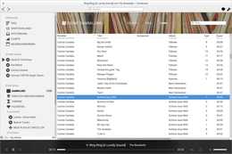
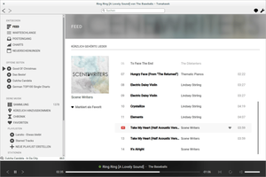
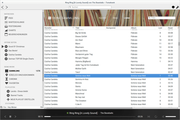
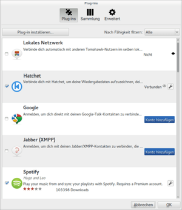

Tomahawk
Dieser Artikel wurde für die folgenden Ubuntu-Versionen getestet:
Ubuntu 16.04 Xenial Xerus
Ubuntu 14.04 Trusty Tahr
Zum Verständnis dieses Artikels sind folgende Seiten hilfreich:
Tomahawk  ist ein "sozialer" Audioplayer, der neben der Verwaltung einer lokalen Musiksammlung einfachen Zugriff auf Medien- und Musikplattformen wie beispielsweise YouTube
ist ein "sozialer" Audioplayer, der neben der Verwaltung einer lokalen Musiksammlung einfachen Zugriff auf Medien- und Musikplattformen wie beispielsweise YouTube  oder SoundCloud unter einer einheitlichen Oberfläche bereitstellt. Wer die eigene Musiksammlung bereits ins Internet verlagert hat, wird sich über die integrierte Anbindung von Ampache bzw. ownCloud freuen.
oder SoundCloud unter einer einheitlichen Oberfläche bereitstellt. Wer die eigene Musiksammlung bereits ins Internet verlagert hat, wird sich über die integrierte Anbindung von Ampache bzw. ownCloud freuen.
| Tomahawk | ||
| www.tomahawk-player.org
 | ||
| Autor: | Christian Muehlhaeuser | |
| Erste Veröffentlichung: | 25. März 2011 | |
| Aktuelle Version: | 0.8.4 (29. April 2015) | |
| Sprachen: | , ,  und viele weitere und viele weitere | |
| Oberfläche: | QT | |
| Lizenz: | GPLv2 | |
| Programmiersprache: | C++ | |
| Kategorie: | Audioplayer | |
| Installation: | ab 16.04: Paketquelle bis 15.10: PPA | |
Das Besondere an Tomahawk im Vergleich zu anderen Programmen ist die transparente Verbindung der eigenen Sammlung mit den Musiksammlungen anderer Tomahawk-Benutzer und Musikdiensten im Internet unter einer einheitlichen Oberfläche. Verschiedene Tomahawk-Musiksammlungen können beispielsweise über Twitter oder Jabber verknüpft und dann von jedem Ort aus abgespielt werden – solange die Quellsammlung über das Internet erreichbar ist.
Trotz aller Vernetzungsmöglichkeiten legen die Entwickler Wert auf die Feststellung, dass Tomahawk kein neues Medium für Raubkopien ist. Im Gegenteil, es wird explizit dazu aufgefordert, die Rechte der Künstler zu respektieren und diese beispielsweise durch den Kauf von Musik oder Konzertbesuche tatkräftig zu unterstützen.
Durch seine zahlreichen Funktionen ist Tomahawk nicht einfach nur ein Audioplayer, sondern ein Stellvertreter für eine neue Programmgattung. Eine konkrete Bezeichnung zu finden ist schwierig, vielleicht so etwas wie eine vernetzte Musik-Enzyklopädie? Da das Programm auf Basis von Qt entwickelt wird, ist es neben Linux auch für Windows, Mac OS X und Android verfügbar. Im Hintergrund wird eine SQLite-Datenbank zur Verwaltung genutzt.
Installation¶
 Tomahawk ist ab Ubuntu 16.04 mit der aktuellen Version in den offiziellen Paketquellen verfügbar und kann einfach installiert werden.
Tomahawk ist ab Ubuntu 16.04 mit der aktuellen Version in den offiziellen Paketquellen verfügbar und kann einfach installiert werden.
tomahawk (universe)
 mit apturl
mit apturl
Paketliste zum Kopieren:
sudo apt-get install tomahawk
sudo aptitude install tomahawk
Für alle älteren Ubuntu-Versionen empfiehlt sich die Installation über das offizielle "Personal Packages Archiv" (PPA) [1] der Entwickler.
PPA¶
Adresszeile zum Hinzufügen des PPAs:
ppa:tomahawk/ppa
Hinweis!
Zusätzliche Fremdquellen können das System gefährden.
Ein PPA unterstützt nicht zwangsläufig alle Ubuntu-Versionen. Weitere Informationen sind der  PPA-Beschreibung des Eigentümers/Teams tomahawk zu entnehmen.
PPA-Beschreibung des Eigentümers/Teams tomahawk zu entnehmen.
Damit Pakete aus dem PPA genutzt werden können, müssen die Paketquellen neu eingelesen werden.
Nach dem Aktualisieren der Paketquellen kann Tomahawk mithilfe des folgenden Paketes installiert werden [2]:
tomahawk (ppa)
mit apturl
Paketliste zum Kopieren:
sudo apt-get install tomahawk
sudo aptitude install tomahawk
Entwickler-Version¶
Da Tomahawk aktuell sehr aktiv entwickelt wird (Stand: Dezember 2014), können interessierte Nutzer, welche mindestens Ubuntu 14.04 verwenden, schon mal einen Blick auf die nächste Version von Tomahawk werfen. Dabei handelt es sich um eine Entwicklungsversion, welche aber so stabil läuft, dass man sie produktiv einsetzten kann.
Adresszeile zum Hinzufügen des PPAs:
ppa:tomahawk/nightly
Hinweis!
Zusätzliche Fremdquellen können das System gefährden.
Ein PPA unterstützt nicht zwangsläufig alle Ubuntu-Versionen. Weitere Informationen sind der PPA-Beschreibung des Eigentümers/Teams tomahawk zu entnehmen.
Damit Pakete aus dem PPA genutzt werden können, müssen die Paketquellen neu eingelesen werden.
Nach dem Aktualisieren der Paketquellen erfolgt die Installation wie oben angegeben.
Aus dem Quelltext¶
Als weitere Möglichkeit kann man Tomahawk auch manuell kompilieren. Eine Anleitung dazu findet man im Artikel Tomahawk/Kompilieren.
Verwendung¶
Ersteinrichtung¶
Beim ersten Start erscheinen die Einstellungen. Hier kann angegeben werden, in welchen Quellen Tomahawk nach Musik suchen soll. Sämtliche Quellen werden über Plug-ins (Resolver) abgerufen. Hierbei handelt es sich um Schnittstellen zu Musikdiensten im Internet (z.B. Soundcloud) oder auch zum eigenen (Heim-)Netzwerk. Das Konzept der Plug-ins ähnelt den Add-Ons für den Browser Firefox.
Zur Nutzung von Tomahawk als "normaler" Audioplayer muss hier nichts ausgewählt werden (Plug-ins können auch noch zu einem späteren Zeitpunkt aktiviert werden). Als Voreinstellung für eigene Audiodateien wird ~/Musik/ im Homeverzeichnis genutzt.
Bedienung¶
Bei Ubuntu-Varianten mit einem Anwendungsmenü erfolgt der Programmstart [3] über den Menü-Eintrag "Multimedia → Tomahawk".
|  |
| Übersichtsseite (Feeds) |
Die Steuerung erfolgt über ein Symbol im Benachrichtigungsfeld des Panels. Die weitere Bedienung wie die Anzeige des Programmfensters oder das Verbergen desselben (und auch das Beenden des Programms) erfolgt ausschließlich über dieses Panel-Applet, dessen Menü über die rechte Maustaste  erreichbar ist.
erreichbar ist.
Über die linke Randspalte wird die Musiksammlung in vier Kategorien
"Entdecken"
"Offene Seiten"
"Deine Musik"
"Freunde"
Diese vier Kategorien sind jeweils noch weiter gegliedert:
Entdecken¶
"Feed" - liefert einen Überblick über die eigenen und von Freunden kürzlich gehörten Lieder
"Warteschlange" - hier werden alle Lieder angezeigt, die man selbst in die Warteschlange eingereiht hat.
"Posteingang" - zeigt alle Lied-Empfehlungen an, die man von seinen Freunden erhalten hat
"Charts" - gibt die Charts von unterschiedlichen Quellen wieder (je nach Quelle z.T. auch weiter unterteilt nach Land und Genre)
"Neuerscheinungen" - zeigt je nach Auswahl gerade veröffentlichte oder bald erscheinende Alben an.
Suchverlauf¶
Diese Kategorie wird nur angezeigt, wenn eine Suche getätigt wurde. Sie enthält dann dynamisch zusammengestellte Listen von Titeln oder Metadatensuchvorgängen. Einträge können über ein (eingeblendetes) Kreuz wieder entfernt werden.
Deine Musik¶
|  |
| Deine Sammlung |
"Sammlung" - Übersicht lokal gespeicherter Titel
"Kürzlich hinzugekommen"
"Chronik"
"Favoriten"
"Playlisten"
"Neue Playlist erstellen"
"Stationen" - hat nichts mit Internetradio zu tun. Benötigt The Echo Nest, um spezielle Playlisten nach bestimmten Kriterien zusammenzustellen.
"Neue Station erstellen"
Freunde¶
Hier werden die Freunde angezeigt, mit denen man sich über "Lokales Netzwerk", Hatchet oder Jabber verbunden hat – sofern diese den Zugriff gestatten (was bei echten Freunden kein Problem darstellen sollte). Aktiviert wird diese Funktion über "Einstellungen → Konfiguriere Tomahawk… → Plug-ins". Zu den konkreten Einstellungen siehe auch erweiterte Konfiguration.
Privater Modus¶
Obwohl die kommunikativen Fähigkeiten einen der größten Reize von Tomahawk ausmachen, möchte man manchmal – wie im richtigen Leben – einfach die Tür hinter sich zu machen und in Ruhe Musik hören. Für diese Stimmungslagen dient der "Private Modus", der über "Steuerung → Privat Modus aktivieren" gesteuert werden kann.
Konfiguration¶
 Dazu wählt man im Menü "Einstellungen → Konfiguriere Tomahawk..." aus. Untergliedert sind die Einstellungen in drei Reiter (Tabs), die nachfolgend in eigenen Abschnitten beschrieben werden. Gespeichert werden Einstellungsdaten an drei Orten im Homeverzeichnis:
Dazu wählt man im Menü "Einstellungen → Konfiguriere Tomahawk..." aus. Untergliedert sind die Einstellungen in drei Reiter (Tabs), die nachfolgend in eigenen Abschnitten beschrieben werden. Gespeichert werden Einstellungsdaten an drei Orten im Homeverzeichnis:
~/.config/Tomahawk/ - Einstellungen
~/.local/share/Tomahawk/ - Datenbank-Ordner
~/.cache/Tomahawk/ - Zwischenspeicher
Plug-ins¶
Um weitere Plug-ins für Tomahawk verfügbar zu machen, muss man diese zuerst aktivieren. Teilweise ist dazu ein Benutzerkonto bei den jeweiligen Online-Diensten erforderlich. Folgende Dienste sind bereits integriert (Auflistung nach der Reihenfolge im Programm):
|  |
| Konfigurationsdialog - Plug-ins |
Lokales Netzwerk (andere Tomahawk-Instanzen im LAN)
XMPP (Jabber)
Spotify (nur mit Premium-Account)
Ampache bzw. ownCloud bis Version 5.0 (siehe auch Problembehebung)
Darüber hinaus sind noch Plug-ins verfügbar, um Links von verschiedenen Streaming-Anbietern mithilfe von Tomahawk zu öffnen (Metadaten):
Weitere Plug-ins¶
Der Entwickler Teo Mrnjavac  bietet im .axe-Format gepackte zusätzliche Plug-ins zum Herunterladen an. Diese Plug-ins lassen sich mit einem Klick auf die Schaltfläche "Plug-ins installieren" nachinstallieren.
bietet im .axe-Format gepackte zusätzliche Plug-ins zum Herunterladen an. Diese Plug-ins lassen sich mit einem Klick auf die Schaltfläche "Plug-ins installieren" nachinstallieren.
Eine sehr interessantes Plug-in, das leider nicht automatisch zur Verfügung steht, ist das "Youtube Plug-in". Es ermöglicht, bequem Musik von Youtube-Videos innerhalb von Tomahawk abzuspielen, ohne dabei das Video zu sehen.
Sammlung¶
Hier können die Ordner eingestellt werden, deren Inhalte als Quelle der eigenen Musiksammlung dienen sollen (Voreinstellung: ~/Musik/). Auf Wunsch kann die Sammlung auf Änderungen überwacht werden. Neue oder gelöschte Dateien werden dann automatisch berücksichtigt. Wenn man die Übermittlung von Metadaten an Echo Nest zulässt, lassen sich Playlisten (siehe oben) nach zahlreichen Kriterien anlegen.
Problembehebung¶
Wiedergabe¶
Wenn der Player beim Abspielen an der Startposition hängen bleibt bzw. nichts zu hören ist, liegt das unter Ubuntu an einem Problem mit dem Paket phonon-backend-gstreamer. Die Entwickler empfehlen generell, dieses Paket zu entfernen und stattdessen das Paket phonon-backend-vlc zu installieren (siehe auch Phonon).
ownCloud¶
Je nach ownCloud-Version ist die "Server-URL" unterschiedlich:
Ab ownCloud 4:
http://SERVER/owncloud/remote.php/ampache/
ownCloud 3:
http://SERVER/owncloud/apps/media/
Dabei gelten folgende Konventionen:
http://- unverschlüsselter Zugriff (ansonstenhttps://- falls der Client das unterstützt...)SERVER- Servername (soweit dieser über DNS aufgelöst werden kann), Domain oder IP-Adresseowncloud- Ordner auf dem Server, in den ownCloud installiert wurde
Experten-Info:
Ab ownCloud 6.0 ist die separate App Music erforderlich, da die Streaming-Funktion aus ownCloud entfernt wurde. Die "Server-URL" lautet dann:
http://SERVER/owncloud/index.php/apps/music/ampache
Links¶
Wiki
- DokumentationFeedback Loop
- Wissensdatenbank Übersetzung
- auf Transifex.comtomahawk - Tomahawk auf Twitter
Projektvorstellung: Tomahawk - Ikhaya, 11/2014
Tomahawk – Musik ohne Ende von (fast) überall
- Blogbeitrag, 08/2012Tomahawk, the Most Important Music App Nobody’s Talking About
- Artikel auf wired.com 02/2012AudioPlayer
 Programmübersicht
Programmübersicht
- Erstellt mit Inyoka
-
 2004 – 2017 ubuntuusers.de • Einige Rechte vorbehalten
2004 – 2017 ubuntuusers.de • Einige Rechte vorbehalten
Lizenz • Kontakt • Datenschutz • Impressum • Serverstatus -
Serverhousing gespendet von